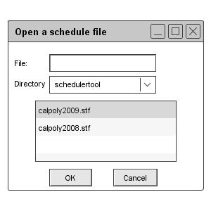
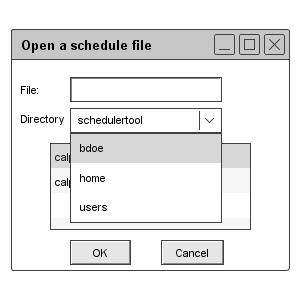

When the user selects the `Open' command in the `File menu,
the system displays the dialog shown in Figure 101.

Figure 101: Figure File open dialog
The user may type the name of the file to open or select it from the scrollable
list of file names. When the user selects the pulldown arrow in the
`Directory' field, the system displays the directory path, as shown in
Figure 102.

Figure 102
The user may navigate into a subdirectory by selecting its name in the list and pressing `OK'. The `OK' button is enabled when there are one or more subdirectories in the scrollable list. When the user presses `OK' for a selected directory, the system displays its contents in the scrollable list.
When the user selects a specific file in the list, the system enters its name in the `File' field and enables the `OK' button, if it was not already. When the user presses `OK', the system opens the selected file if it is not already open. Once opened, the system displays the file's initial view, per its most recently saved settings, including in particular the option setting for its initial view window(s) Double clicking on a scheduler file name or directory name is a shortcut for selecting that name and pressing `OK'.
The user may type the name of a schedule file or directory in the `File' field. As the user types, the scrollable list is scrolled to the alphabetic position in the list nearest but not after the place where the thus-far typed name appears or would appear in the list. If the user types the complete name of an existing scheduler file or readable directory, the effect is the same as when the user selects the name by clicking in the list. If the user types the name of a non-existent file, the user may press `OK', whereupon the system creates a new file of the entered name. This is effectively a short cut for executing `File->New' followed immediately by `File-Save'.
Since unreadable files, unreadable directories, and non-scheduler files are disabled in the file-open dialog list, the user cannot select one of these. However, the user may type the name of an unreadable file, unreadable directory, or non-scheduler file in the `File' field. If the user does so, the system disables the `OK' button, since these files or directories cannot be opened. If the user continues typing so that the name is not an unreadable scheduler file, unreadable directory, or an existing non- scheduler file, the system re-enables the `OK' button.
The `New' and `Open' commands are always enabled in the file menu. The following is a summary of the when the `OK' button is enabled in the file-open dialog:
prev: file | next: open | up: file commands | index: index